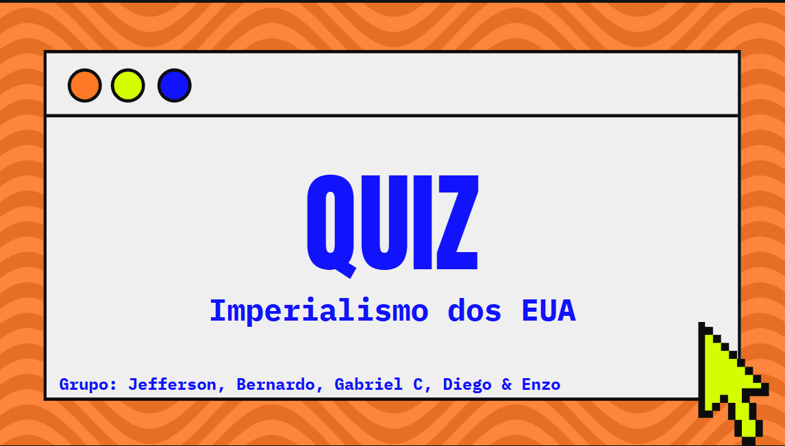
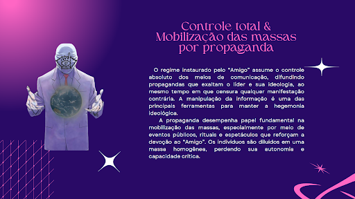

Geopolítica e Relações Internacionais
- Assunto:
- UNAIDS
- Objetivo da atividade:
- A atividade tem como objetivo desenvolver habilidades de pesquisa sobre um organismo internacional,investigar suas características, funções, países membros, funcionamento e decisões importantes, aprendendo sobre a relevância dessas organizações no mundo e em suas vidas.
- Habilidades desenvolvidas:
- C2 - H8, H10 e H12
- Link da atividade
- Acessar atividade

Quiz Imperialismo dos EUA
- Assunto:
- Imperialismo dos EUA século XIX
- Objetivo da atividade:
- O objetivo dessa atividade é promover a leitura e compreensão de um período importante da história dos Estados Unidos, incentivando a pesquisa e a colaboração em grupo. Ao criar um quiz, os alunos aprofundam seu conhecimento sobre temas como a Marcha para o Oeste, o expansionismo, e a Doutrina Monroe.
- Habilidades desenvolvidas:
- C2 - H8, H10 e H12
- Link da atividade
- Acessar atividade

Jornal 1ª Guerra
- Assunto:
- 1ª Guerra mundial
- Objetivo da atividade:
- criar um Jornal Histórico sobre os acontecimentos do final da Primeira Grande Guerra. Como base, do material do Geekie One
- Habilidades desenvolvidas:
- C6 - H39
- Link da atividade
- Acessar atividade

Totalitarismo
- Assunto:
- Totalitarismo
- Objetivo da atividade:
- Compreender e analisar como cenas específicas retratam as características dos regimes totalitários e como os protagonistas resistem à opressão, valorizando a memória e a liberdade.
- Habilidades desenvolvidas:
- C5 e C6 - H30, H36, H39, H40
- Link da atividade
- Acessar atividade